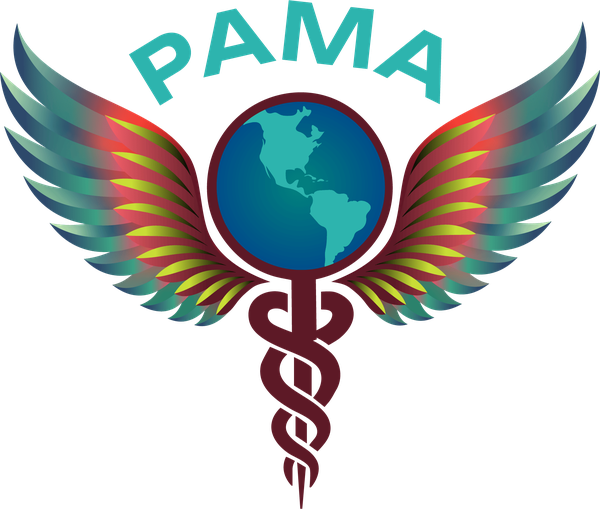
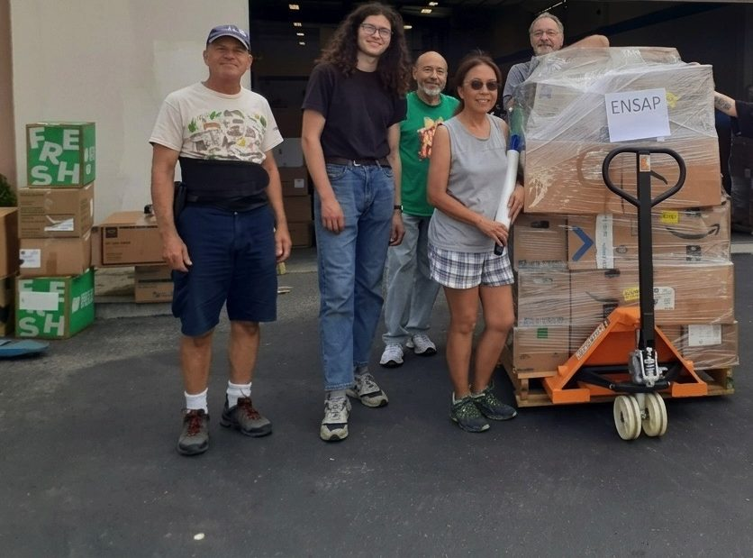
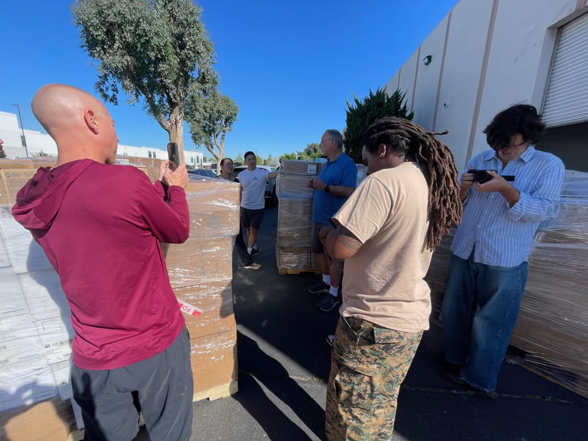
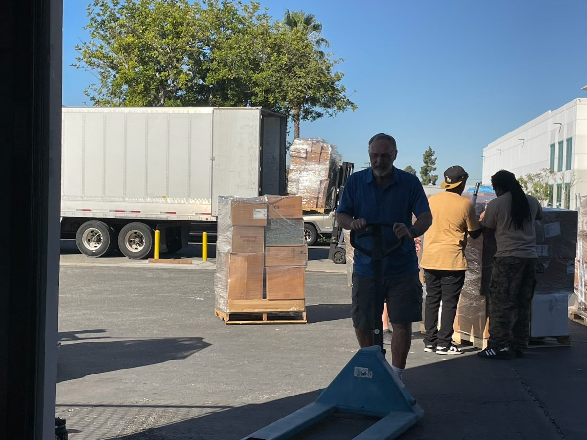
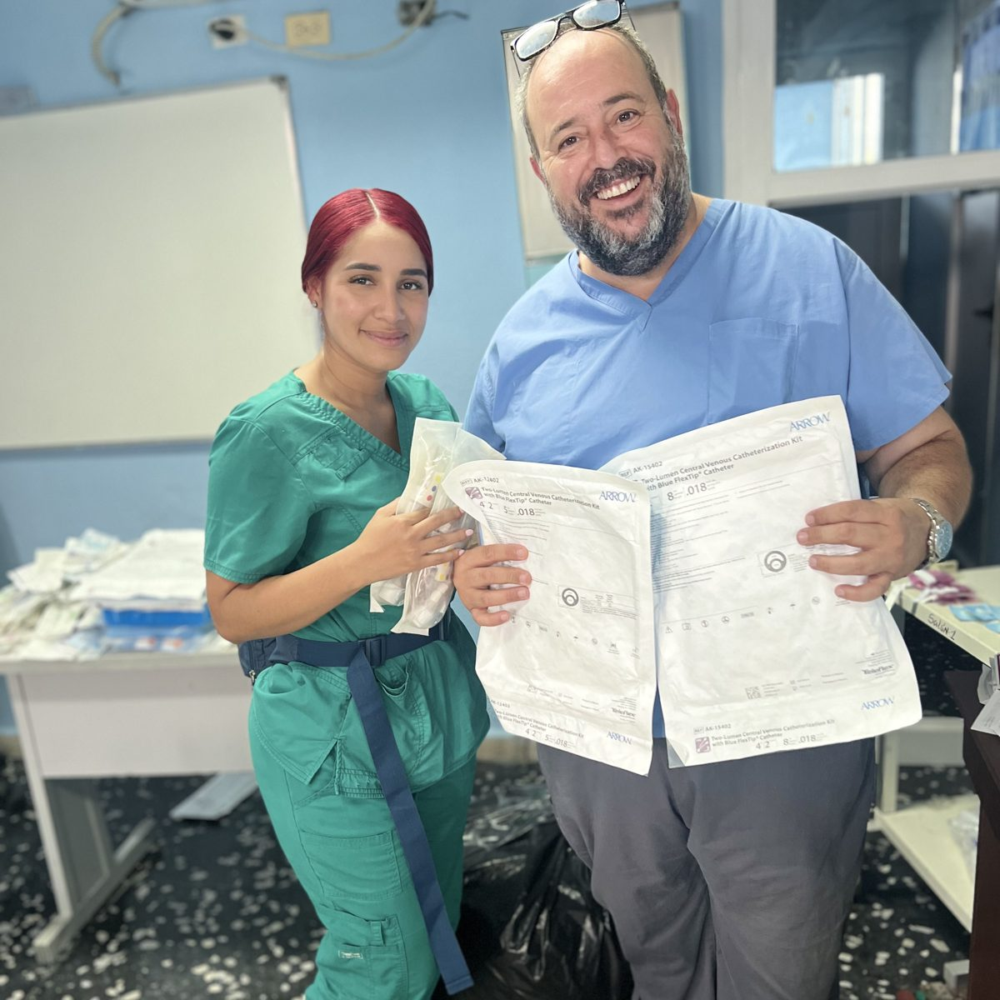

About PAMA
Who we are and the mission that guides our coalition.

Together with clinicians, hospitals and community partners, we move donated medical supplies, training and diagnostic tools to underserved clinics across the Americas, and we measure the difference every delivery makes.
Registered 501(c)(3) nonprofit · EIN 33-2193485 · Gifts are tax-deductible
From PAMA’s shipment and financial records, updated October 2026. See the full financials
Every donation follows the same accountable path, from the warehouse to the clinic.

Partners, suppliers and community supply drives donate medical supplies, and your cash gifts buy the items clinics ask for most.

Volunteers sort, scan and palletize every item in our 5,000 sq ft warehouse, keeping a chain-of-custody record for each pallet.

We score each shipment with our Solidarity Supply Index for scarcity, ethical delivery and clinical relevance, then ship it with logistics partners.

Receiving clinicians sign for and photograph each delivery, so every donation can be traced to the clinic it reached.
“We sincerely appreciate the sutures you sent us in August. We urgently require them as we cannot perform surgeries without them.”
In Aldea Pitzal, Guatemala, a donated ultrasound and an electronic medical record translated into K’iche’ helped Dr. Eliseo Pelico’s clinic offer visits for about $3, compared with about $40 at private clinics.
His clinic now provides 24-hour urgent care in K’iche’, Spanish and English, and its Community Impact Measure rose from 5 to 17 out of 20 in two years.
See our impactA secure one-time gift through PayPal funds the next shipment.
Donate nowMonthly membership starts at $5 for medical students and $15 for supporters.
Join the coalitionHospitals, clinics and suppliers can give unused medical supplies that clinics need.
How to donate suppliesHelp sort, document and pack shipments, or lend clinical and research skills.
Volunteer with us
Who we are and the mission that guides our coalition.

Fund shipments, clinical training and digital health tools.

How the Solidarity Supply Index and Community Impact Measure track results.

Annual contributions and how every dollar is allocated.

Field reports and analysis from across the Americas.
The partners and donors behind our medical supply logistics program.